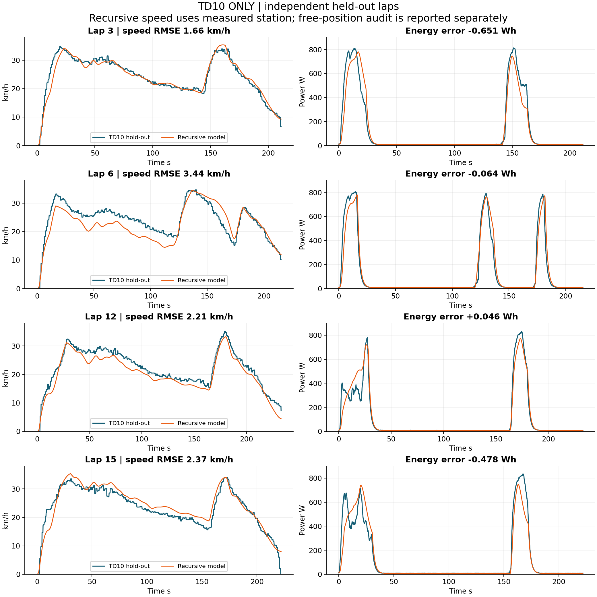
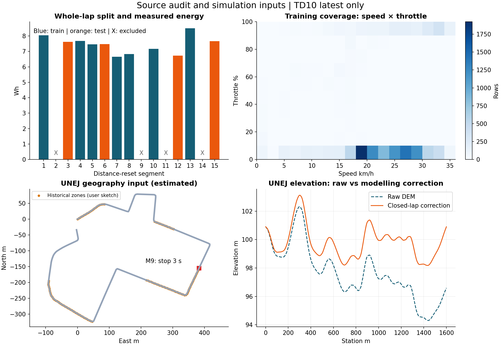
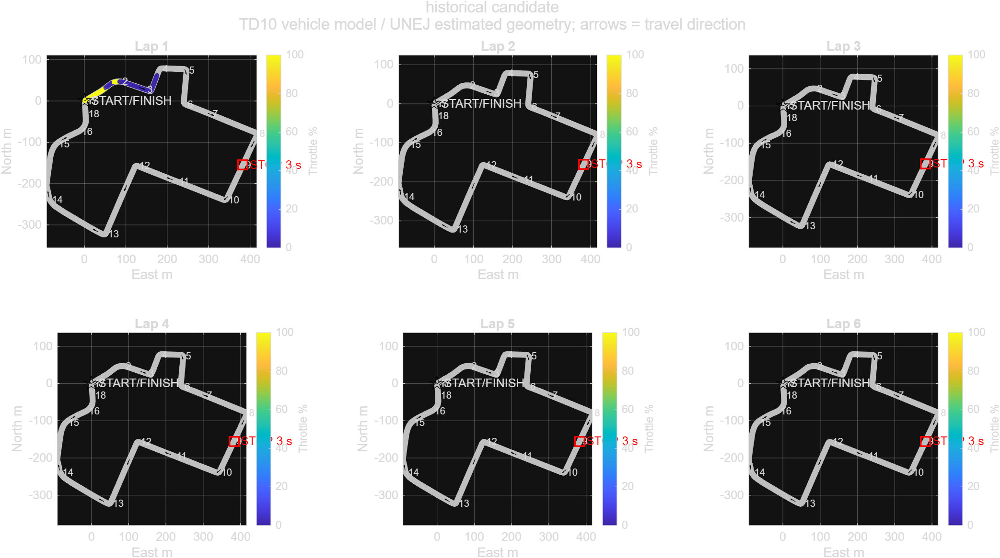

An integrated computational engineering workbench and telemetry analysis suite developed for the Kontes Mobil Hemat Energi (KMHE) 2026 Urban Concept Electric Vehicle. Combines real-time MQTT cloud ingestion, dual-lap browser telemetry replay with GPS transmission-loss interpolation, empirical drivetrain system identification (MATLAB/Simulink and Python state-space estimation), and Three.js physics-accurate circuit simulators for driver throttle profiling and multi-lap competition strategy optimization.
High-frequency telemetry analysis tool featuring automatic GPS packet-loss gap recovery, dual-lap synchronized comparisons, start-line proximity lap splitting, and synchronized Chart.js time-series plots (Speed, Current, Voltage, Power, and Recorded Delta Wh).
Real-time 3D circuit trainer modeling track elevation, cornering curvature, BLDC motor torque curves, rolling resistance, and regenerative braking. Designed to train drivers for optimal pulse-and-glide throttle manipulation.
Endurance race strategist calculating multi-lap energy depletion, thermal derating, target lap windows, and cumulative Wh consumption across the full 6-lap official competition attempt at the UNEJ circuit.
Technical validation audit benchmarking raw track telemetry (Session TD10) against Simulink physics models and Python parameter identification scripts. Reports residual distributions, torque constants, and friction losses.



| Layer | Component | Technology | Function |
|---|---|---|---|
| In-Vehicle Sensing | Cockpit CAN / ESP32 node | Hardware & C++ | Samples wheel speed, GPS coordinates, pack voltage, phase current, and driver throttle. |
| Telemetry Transport | Cellular MQTT Uplink | HiveMQ Cloud Broker | Low-latency TLS-encrypted payload delivery to paddock and pit-lane monitoring stations. |
| Stream Processing | Node-RED Edge Flows | Node-RED / JSON | Cockpit driver HUD rendering, GPS distance compensation (V5/V6), and CSV session logging. |
| Digital Twin & Modeling | Physical Parameter Estimation | MATLAB / Simulink / Python | Non-linear least squares fit of drivetrain resistance, inertia, and motor efficiency constants. |
| Replay & Simulation | Web Workbench & Simulators | Three.js / Leaflet / Chart.js | Driver post-run debrief, throttle map optimization, and multi-lap endurance race strategy planning. |